Een Nederlands huishouden was vroeger bijna altijd een gezin: vader, moeder en kinderen. Tegenwoordig zien we steeds meer huishoudens van een of twee personen.
In een huishouden is er altijd werk te doen. Veel huishoudelijk werk bestaat uit poetsen en opruimen. Ook moet de was worden gedaan en de afwas. Eten klaarmaken behoort ook tot de huishoudelijke taken.
Vroeger werd dit allemaal 'met de hand' gedaan. Dat kostte soms wel 50 uur per week. Het werk werd bijna helemaal alleen gedaan door de vrouw in het gezin. Ze werd daarom de 'huisvrouw' genoemd.
De laatste 50 jaar is er veel veranderd. Er kwamen huishoudelijke apparaten, die het werk veel gemakkelijker maken. En sneller: het werk kost veel minder tijd dan vroeger. Daardoor hebben vrouwen de gelegenheid om buitenshuis te gaan werken. Steeds meer huishoudelijke taken worden gedaan door de man in huis. Hij wordt dan vaak de 'huisman' genoemd.
| In huis treffen we voor het schoonmaken vaak de volgende apparaten aan: een stofzuiger, een wasmachine, een vaatwasser en een strijkijzer met strijkplank. Soms is er ook een wasdroger. |
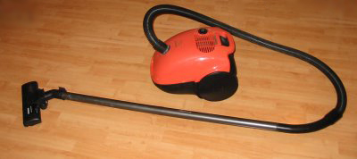
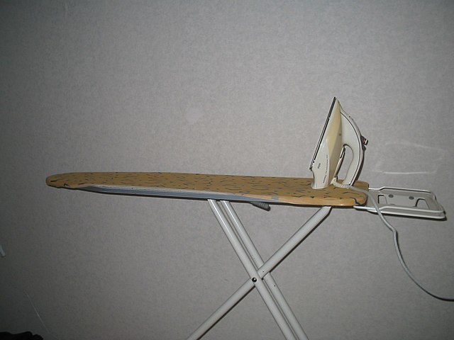 |
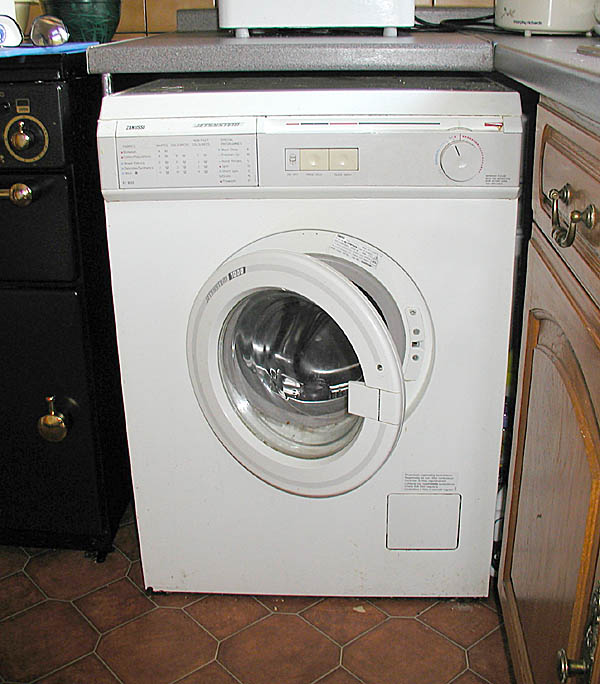 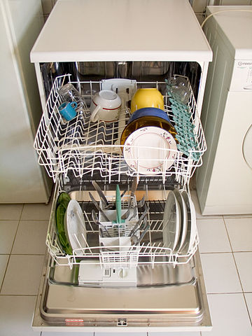 |
Om eten te bewaren is er de koelkast, meestal met een vriesvak. Eten klaarmaken doen we met een kookplaat, een oven en de magnetron. Ook is er vaak een blender, een mixer en een koffiezetapparaat. Een waterkoker en een broodrooster worden ook veel gebruikt.
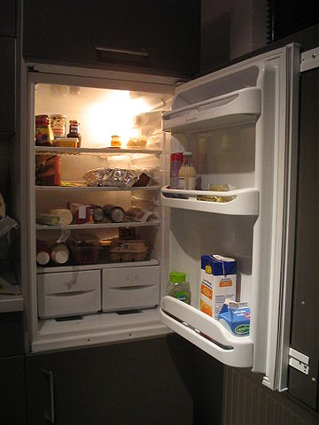 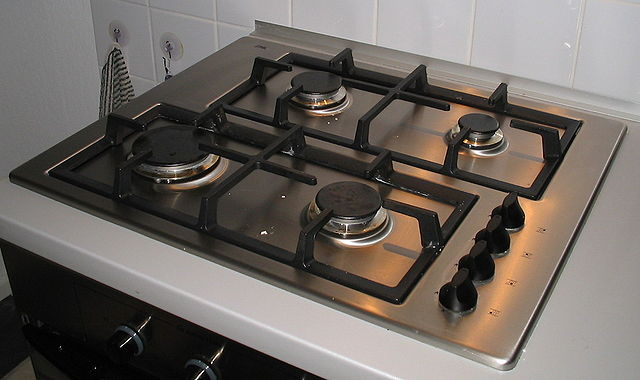 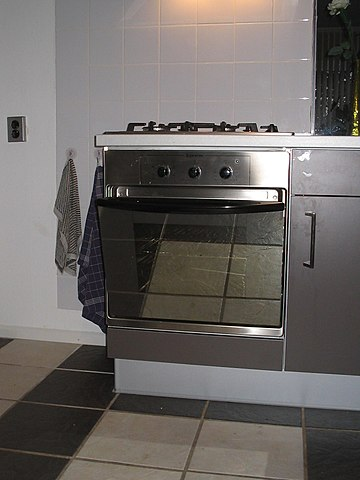 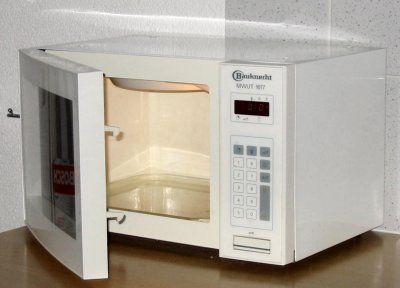 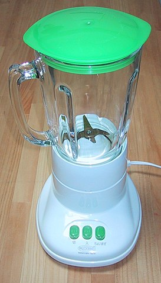 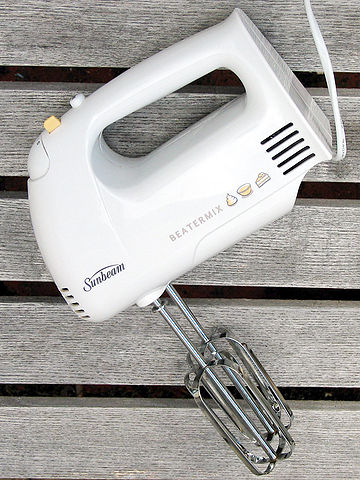 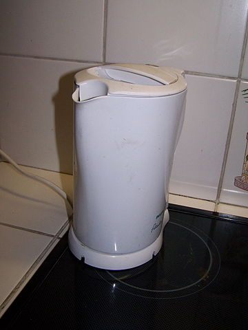 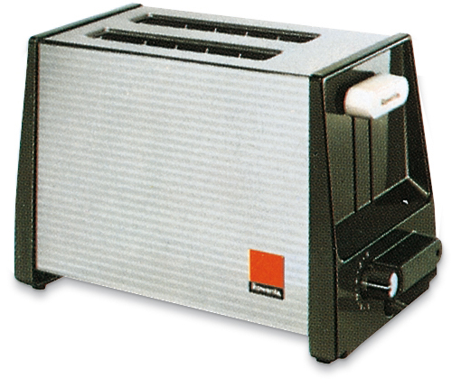
Wat zal de toekomst brengen?
Slimme apparaten?
Misschien we een robot, die ons alle werk uit handen neemt.
Wie weet.